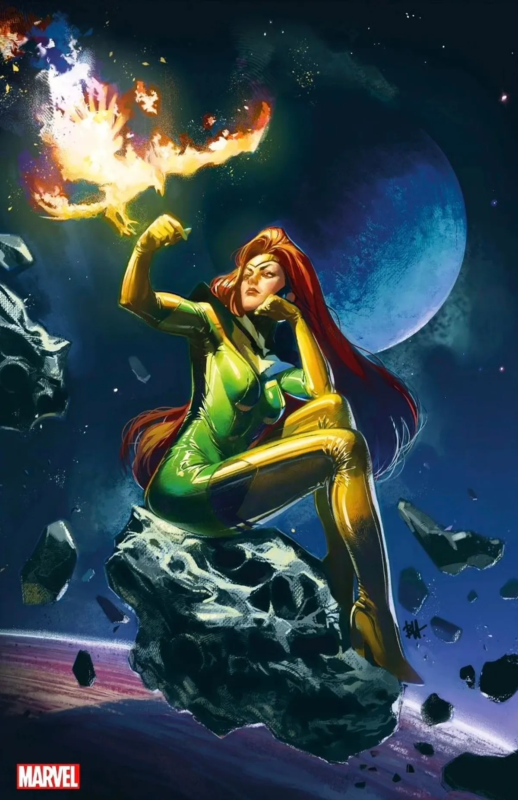

Коротко про героя
Джін Грей - одна з найсильніших мутантів у X-Men. Її телепатичні та телекінетичні здібності є безмежними. Її зв'язок з феноменом Фенікса робить її силу практично невизначеною.
Здібності та переваги
- Телепатія - контроль над навиком
- Телекінез - керування матерією психічним тілом
- Феномен Фенікса - універсальна сила
- Емпатія